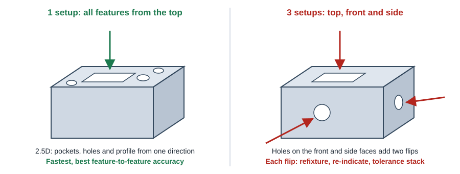
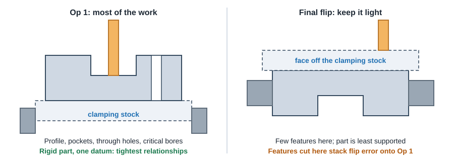

CNC Machining
Setups & Part Orientation
Every time a part is unclamped and turned to reach another face, someone has to fixture it, find it again and accept some position error. Designing for fewer setups is one of the biggest levers on cost and accuracy.
At a glance
What each setup costs

- Time: design and build or adjust a fixture, load, indicate (find zero), prove out the program, inspect.
- Accuracy: features cut in the same setup are positioned by the machine (very repeatable). Features cut in different setups also carry the re-clamping error, so tolerances stack.
- Risk: every flip clamps on already-machined surfaces that can be marred or distorted.
Design rules to cut setups
- Put features on as few faces as possible. A 2.5D design (outline, pockets and holes all from the top) is the cheapest milled part there is.
- Keep features on the six orthogonal faces for 3-axis work, and align every hole and pocket with an X, Y or Z axis.
- Move side holes to the top when function allows, or turn a side tapped hole into a through hole from the top with a nut or insert.
- Group angled features onto one angle so a 3+2 machine can reach them in one index, instead of several.
- Put critical relationships on one face. If two bores must be concentric or a hole pattern must be accurate to an edge, design them to be cut from the same side.
- Use mill-turn or a live-tool lathe for round parts with flats and cross holes, instead of turning then moving to a mill.
- Split the part into simpler pieces if one design needs many setups. Two simple 1-setup parts plus two dowel pins can beat one 5-setup part.
- Avoid features that need the part to be clamped on a thin or curved face.
First operation vs final flip

- The first setup usually holds the tightest relationships because nothing has moved yet. Put critical bores, hole patterns and the outside profile there.
- Minimize work in the final flip. By then the part is thinner and less supported, and anything cut there inherits the flip error.
- Leave clamping stock (or let the shop add it): extra material on the bottom or sides that is held in the vise and faced off at the end.
- Avoid cuts that separate the part from its holding stock early. If a large opening would cut the block into pieces during the first op, the shop needs a different strategy and the price goes up.
- Automated services may orient the part themselves and report which side is cut first. Check the DFM feedback and ask for a human review if a critical feature lands on the last side.
Datums and dimensioning
- Pick one datum scheme (for example the intersection of two edges and the bottom face) and dimension all toleranced features from it.
- Choose datums that are machined in the first setup and that the shop can clamp and indicate on.
- Avoid chain dimensioning across features cut in different setups; tolerances add up.
- Call out tight tolerances only where needed. See Tolerances & Finishes.
Workholding friendly design
Helps the shop
- Two flat, parallel faces to clamp on
- Square outside edges or a rectangular bounding box
- Extra stock or tabs where a curved or organic part can be held, removed last
- Through holes that can double as bolt-down points for a fixture plate
- Features kept clear of the clamping zone (bottom 0.125 to 0.25 in of each side)
Makes holding hard
- Fully curved or organic outer surfaces with no flats
- Thin plates with heavy pocketing (they warp when unclamped)
- Critical features on every face
- Long, slender parts held from one end
- Tapered or drafted outer walls with no parallel faces
Setup count checklist
Run through this before releasing a model for quote. Each "no" usually means one more setup or a more expensive machine.
| # | Check | If not |
|---|---|---|
| 1 | Can every feature be reached from the top and bottom only? | Each extra face = +1 setup on 3-axis |
| 2 | Are all holes and pockets on X, Y or Z axes? | Angled features need 3+2 or 5-axis |
| 3 | Are critical relationships cut from the same face? | Tolerance stack between setups |
| 4 | Is there a flat, parallel pair of faces to clamp? | Custom fixture or soft jaws needed |
| 5 | Are inside corners and pockets sized for standard cutters? | Extra tools, slow small-tool passes |
| 6 | Is the part round? Could it be turned instead? | Milling a round part wastes time and stock |
| 7 | Could one complex part be two simple parts? | Many setups and long cycle time |
| 8 | Are threads limited to faces already being machined? | A thread on another face adds a setup |
Sources
ProtoLabs "15 Design Tips to Reduce the Cost of CNC Machining" (minimize setups, single datum, split parts) · ProtoLabs CNC milling design guidelines · Xometry CNC Machining Design Guide (part complexity) · general machining practice.